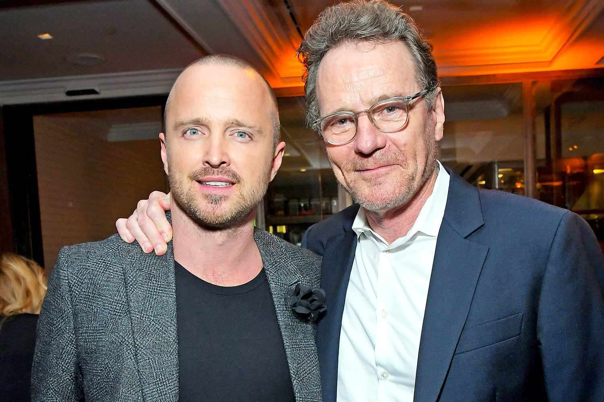

Reencuentro del elenco en convención internacional
Varios protagonistas de la serie participaron en un panel especial donde compartieron anécdotas y respondieron preguntas de los fans.

Varios protagonistas de la serie participaron en un panel especial donde compartieron anécdotas y respondieron preguntas de los fans.
El creador de Breaking Bad prepara una nueva serie original que promete captar la atención de los seguidores del universo BB.
Tanto Breaking Bad como sus series derivadas se mantienen en el top de las más vistas, demostrando su vigencia años después de su final.

Los fans podrán conseguir una edición coleccionista que incluye entrevistas, escenas inéditas y material detrás de cámara.
Se viene una experiencia interactiva con ambientaciones de la serie, trivias y merchandising oficial para coleccionistas.